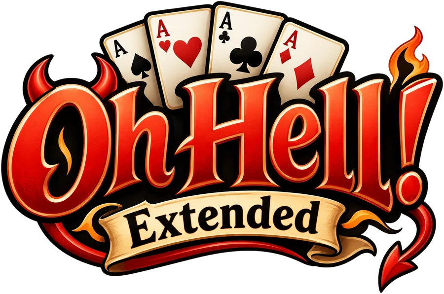

The Infernal Jukebox
Sketches for the game's music: press a record to play it
Everything here is synthesised live in your browser: no recordings, nothing downloaded.

Sketches for the game's music: press a record to play it
Everything here is synthesised live in your browser: no recordings, nothing downloaded.